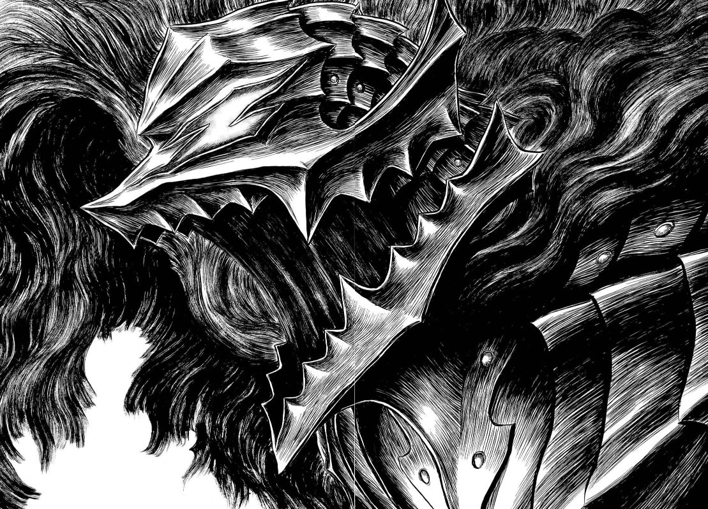

Le mie passioni
Ho iniziato ad allenarmi quasi due anni fa e da allora è diventata una parte fissa della mia routine. Per me la palestra non è solo un posto dove allenarsi fisicamente — è il luogo dove riesco a dare il massimo e allo stesso tempo a staccare la testa da tutto il resto. Mi impegno al 100% ogni volta che entro, e quando esco mi sento sempre meglio di prima.
Il mio genere preferito sono gli FPS — c'è qualcosa nell'adrenalina e nella precisione richiesta che mi ha sempre attirato. Il mio gioco preferito è Apex Legends, che ormai gioco da anni. Ma più che il gioco in sé, è la compagnia che lo rende speciale: gioco sempre con i miei amici e quella dimensione social è quello che tiene viva la passione nel tempo.

La mia serie preferita è Berserk. Quello che mi ha conquistato non è solo la trama, ma la profondità emotiva che riesce a trasmettere — i personaggi sono costruiti in modo che ti entrano dentro davvero. E poi i disegni sono semplicemente magnifici: ogni tavola è curata al dettaglio e riesce a farti immergere completamente nella storia, come se la stessi vivendo.
